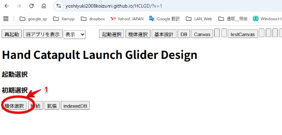

Hand
Catapult Launch Glider Design
ブラウザ上で動作する、紙飛行機の設計ソフトです。数値を入力して紙飛飛行機の型紙を作成します。
しかし、今は型紙の作成までいません。
最初の起動 現時点の話で将来どうするかは未定です。
ブラウザーで下記のURLを起動します。
https://yoshiyuki2008koizumi.github.io/HCLGD/?v=1

下記の表示が出れば起動完了です。
初回の起動は何も登録されていません。最初に１．機体選択をクリックします
https://yoshiyuki2008koizumi.github.io/HCLGD/doc/初回起動?v=1